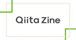

Qiita Zine
https://zine.qiita.com/
Dear Great Hackers
フィード
1日に4万字書いても疲れない！？打鍵感の良い高性能キーボード「REALFORCE」をuhyoさんにレビューしてもらった 3
3
Qiita Zine
エンジニアをはじめ、毎日かなりの時間をタイピングに費やす方にとって、キーボードの打ちやすさや打鍵感は非常に重要な要素と言えるでしょう。 「キーボードはどれも一緒でしょ」と思う方もいるかもしれませんが、キーボードの押下圧（ […]投稿 1日に4万字書いても疲れない！？打鍵感の良い高性能キーボード「REALFORCE」をuhyoさんにレビューしてもらった は Qiita Zine に最初に表示されました。
4日前

Qiitaニュース | 読まないと後悔する技術書30選
Qiita Zine
2024/06/19 に配信された Qiitaニュースのバックナンバーです。 Dear great hackers, こんにちは！いつもQiitaをご利用いただきありがとうございます。 先週いいねが多かった投稿ベスト20 […]投稿 Qiitaニュース | 読まないと後悔する技術書30選 は Qiita Zine に最初に表示されました。
7日前
Qiitaニュース | 2ヶ月でAWS認定12冠したので攻略法を語ります
Qiita Zine
2024/06/19 に配信された Qiitaニュースのバックナンバーです。 Dear great hackers, こんにちは！いつもQiitaをご利用いただきありがとうございます。 先週いいねが多かった投稿ベスト20 […]投稿 Qiitaニュース | 2ヶ月でAWS認定12冠したので攻略法を語ります は Qiita Zine に最初に表示されました。
14日前

「あなたのお仕事をちょっぴり豊かにする生成AI活用術」Qiita Conference 2024イベントレポート
Qiita Zine
2024年4月17日〜19日の3日間にわたり、日本最大級*¹のエンジニアコミュニティ「Qiita」では、オンラインテックカンファレンス「Qiita Conference 2024」を開催しました。 *¹「最大級」は、エン […]投稿 「あなたのお仕事をちょっぴり豊かにする生成AI活用術」Qiita Conference 2024イベントレポート は Qiita Zine に最初に表示されました。
15日前
「Amazonの文化は実際の開発にどう活きているのか、経験者に訊いてみる」Qiita Conference 2024イベントレポート
Qiita Zine
2024年4月17日〜19日の3日間にわたり、日本最大級*¹のエンジニアコミュニティ「Qiita」では、オンラインテックカンファレンス「Qiita Conference 2024」を開催しました。 *¹「最大級」は、エン […]投稿 「Amazonの文化は実際の開発にどう活きているのか、経験者に訊いてみる」Qiita Conference 2024イベントレポート は Qiita Zine に最初に表示されました。
15日前
Podcast番組 #35 | アウトプットし続ける大切さ
Qiita Zine
『エンジニアストーリー by Qiita』は、「エンジニアを最高に幸せにする」というQiitaのミッションに基づき、エンジニアの皆さまに役立つヒントを発信していくPodcast番組（無料・登録不要）です。毎回、日本で活躍 […]投稿 Podcast番組 #35 | アウトプットし続ける大切さ は Qiita Zine に最初に表示されました。
20日前
Qiitaニュース | WBSについて学び直した
Qiita Zine
2024/06/12 に配信された Qiitaニュースのバックナンバーです。 Dear great hackers, こんにちは！いつもQiitaをご利用いただきありがとうございます。 先週いいねが多かった投稿ベスト20 […]投稿 Qiitaニュース | WBSについて学び直した は Qiita Zine に最初に表示されました。
21日前
未経験からインテリジェンス業界へ。日立のディフェンスシステム事業部のSEはどのような仕事をしているのか
Qiita Zine
昨今のデジタル技術の急速な発達に伴って、ますます重要なトピックになってきている国家の安全保障に関わるインテリジェンス。 そのような領域で現在システムエンジニアとして活躍しているのが、株式会社 日立製作所のディフェンスシス […]投稿 未経験からインテリジェンス業界へ。日立のディフェンスシステム事業部のSEはどのような仕事をしているのか は Qiita Zine に最初に表示されました。
22日前
VPoE経験者2名が語る！目の前の事をやり切る大切さ
Qiita Zine
ここ10年で、技術や開発手法の多様化に伴い、IC（Individual Contributor）やテックリード、SREなど、エンジニアにとっての新しいキャリアが広がってきています。 キャリアパスの選択肢が増えるのは非常に […]投稿 VPoE経験者2名が語る！目の前の事をやり切る大切さ は Qiita Zine に最初に表示されました。
23日前
「開発生産性向上サービスを作るFindyが自分たちで開発生産性を爆上げした組織づくりの歩み」Qiita Conference 2024イベントレポート
Qiita Zine
2024年4月17日〜19日の3日間にわたり、日本最大級*¹のエンジニアコミュニティ「Qiita」では、オンラインテックカンファレンス「Qiita Conference 2024」を開催しました。 *¹「最大級」は、エン […]投稿 「開発生産性向上サービスを作るFindyが自分たちで開発生産性を爆上げした組織づくりの歩み」Qiita Conference 2024イベントレポート は Qiita Zine に最初に表示されました。
1ヶ月前